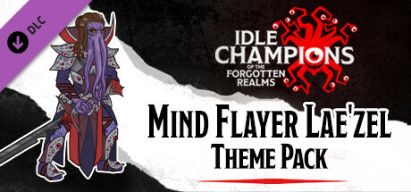
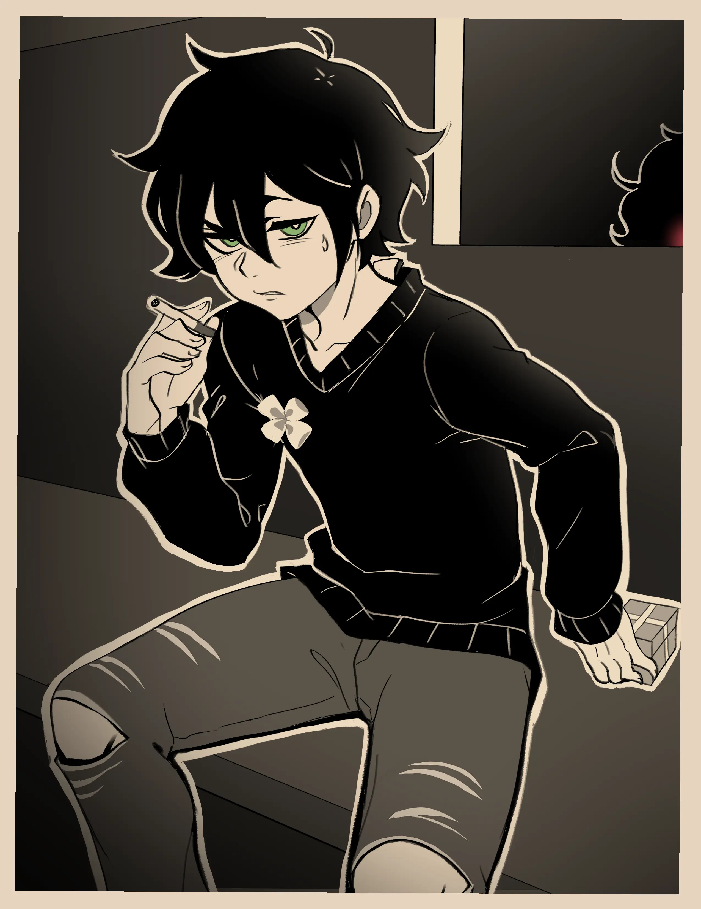
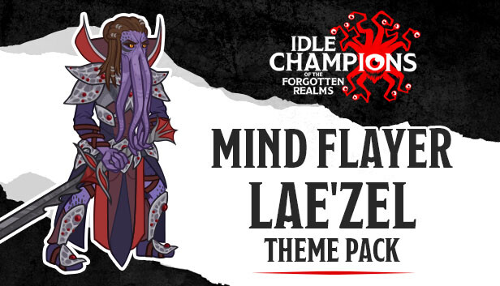
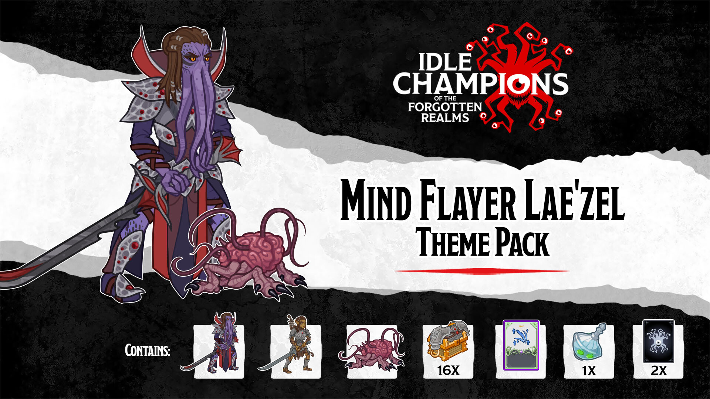

Возрастное ограничение 18+: Игра содержит темы психологического насилия, токсичной созависимости, каннибализма, чёрного юмора, оккультизма и деструктивного поведения. Материалы сайта предназначены исключительно для ознакомления взрослой аудиторией.
The Coffin of Andy and Leyley

Добро пожаловать в мрачную и гипнотическую историю брата и сестры Грейвс. Погрузитесь в атмосферу изоляции, безумия, голода и неразрывных уз, переступающих грань добра и зла.
О Чём Игра?
The Coffin of Andy and Leyley (Гроб Энди и Лейли) — это культовая эпизодическая приключенческая визуальная новелла в жанре психологического триллера и чёрной комедии, созданная независимым разработчиком Nemlei.
В центре повествования — двое родных людей: Эндрю (Энди) и его младшая сестра Эшли (Лейли). Они оказались заперты в своей квартире на карантине из-за паразитической эпидемии, охватившей их город. Оставшись без запасов еды, воды и какой-либо связи с внешним миром, герои медленно погружаются в пучину отчаяния.
То, что начинается как отчаянная борьба за физическое выживание, стремительно превращается в кошмарный танец вокруг демонических культов, убийств, каннибализма и извращённой эмоциональной созависимости, где ни один из героев не может считаться невинным.
Эпизоды Истории
Голод, Соседи и Оккультизм
Спустя месяцы голодного затвора герои решаются на отчаянный шаг. Пытаясь найти пищу, они проникают в квартиру соседа и раскрывают сатанинский культ. Столкновение с потусторонним ритуалом ставит героев перед необратимым выбором, который навсегда разрушает остатки их нормальности.
Погребение, Родители и Грех
Побег из изолятора приводит Энди и Лейли обратно в родительский дом. Здесь оживают травмы детства, застарелые обиды и тёмная натура каждого из героев. Игрока ждут напряжённые психологические развилки: от побега и самопожертвования до шокирующего падения в пучину полного единения.
Финальная Расплата
Заключительная глава саги, призванная поставить точку в судьбе Эндрю и Эшли. Смогут ли они вырваться из круговорота вины и безумия, или их совместный путь закончится там, где и должен был — в символическом общем гробу?
Особенности Игры
Глубокий Психологизм
Игра исследует сложные патологии: созависимость, синдром жертвы и агрессора, посттравматический синдром и моральную эрозию личности в экстремальных условиях.
Шокирующие Выборы
Здесь нет канонического «светлого» пути. Каждое решение требует жертв и приводит к драматическим развилкам: от трагической гибели до шокирующего симбиоза героев.
Неповторимый Арт-стиль
Авторский минималистичный комикс-стиль автора Nemlei с выразительной мимикой, монохромной графикой и яркими контрастными акцентами западает в память навсегда.
Главные Действующие Лица
Познакомьтесь ближе с ключевыми фигурами мрачной трагедии Грейвсов:

Эндрю (Энди)
Старший брат. Уставший, пессимистичный и винящий себя во всем, но крепко привязанный к сестре.

Эшли (Лейли)
Младшая сестра. Импульсивная, манипулятивная, ревнивая собственница с наклонностями социопата.

Джулия
Знакомая Эндрю. Рациональная девушка, пытавшаяся разобраться в подозрительных тайнах брата и сестры.

Рене
Фигура из прошлого и кошмаров героев, хранящая ключи к пониманию детских травм семьи Грейвс.
Кадры и Иллюстрации
Официальные скриншоты и постеры новеллы The Coffin of Andy and Leyley:


Системные Требования
Минимальные требования:
- ОС: Windows 7 / 8 / 10 / 11 (64-bit)
- Процессор: Intel Core 2 Duo или аналогичный
- Оперативная память: 2 GB ОЗУ
- Видеокарта: Любая с поддержкой DirectX 9.0c
- Место на диске: ~800 MB свободного места
Информация об издании:
- Разработчик: Nemlei
- Издатель: Nemlei
- Жанр: Психологический хоррор, Визуальная новелла
- Платформа: ПК (Steam, Itch.io)
- Язык интерфейса: Английский, фанатские переводы